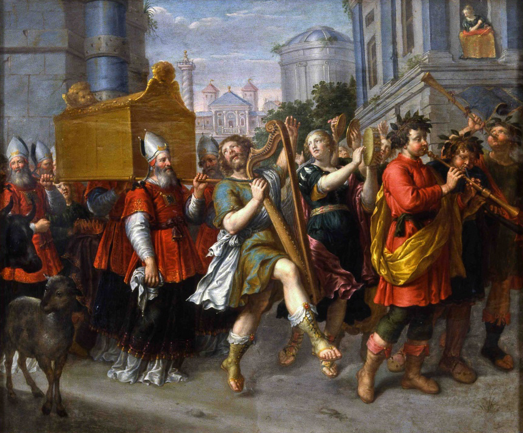

Psalm 132 is the longest of 15 Songs of Ascent, or worship songs sung by pilgrims traveling up to Jerusalem for feast days. It celebrated the Feast of Tabernacle commemorating God's dwelling with Israel and ceremonially reenacting the Ark of the Covenant's entry into Jerusalem. Solomon's speech dedicating the temple in 2 Chronicles 6:41–42 uses phrases from verses 10 and 16, possibly indicating he is the author. Of the Song of Ascent psalms, it uniquely has a royal-messianic theme. Scholars generally divide it into a two-part structure: the plea of man in verses 1–10 and divine answer in 11–18.
For a while now, I've been reading this Psalm and praying over it each night. It includes many amazing promises of the Messiah, of His perfect reign and glorious dwelling with mankind in the future Kingdom.
This study of Psalm 132 should build on themes in previous articles. I wrote before very briefly on the Davidic Covenant focused on 2 Samuel 7:12–16. Many people only consider the covenant as described in that passage, but the Bible is rich with descriptions of the coming Messiah's rule. We should all eagerly anticipate a better world where Satan does not roam free to devour us (1 Peter 5:8).
Remember David (1–5)
The opening verse calls the listener to remember David and his hardship, contextually his strenuous efforts to secure and house the Ark.
Exodus 25–40 records in lengthy detail how God commanded Moses to build the Ark of the Covenant and Tabernacle to house it as the nation journeyed around the wilderness. It acted as God's throne where He would directly speak to Moses and Aaron (Exodus 25:22). At the end of the Exodus, the priests carried the Ark to the Jordan River, and it receded as a visible sign that God would carry the nation to victory in the Promised Land (Joshua 3:6–17).
However, the people later sought to manipulate the Ark as a kind of good luck charm in battle against the Philistines (1 Samuel 4:1–10). The wicked pagans captured it but quickly begged for Israel to accept it back after God tormented them with plagues. The Ark was not a trophy to be conquered like some tribal idol. It was God's dwelling with mankind.
The Ark then remained in the house of Abinadab for 20 years. Likely, the people feared God's wrath too much to risk any attempt to secure it further. 1 Samuel 6:19 mentions 50,070 men died moving it to safety as a judgment for daring to open it! (admittedly this seems an implausibly large number for a small village. Some Greek manuscripts and Josephus use 70, though most Masoretic text favors the larger number). Imagine the iconic Indiana Jones scene where the Nazi's faces melted in a burst of light. Whether it was that dramatic or not, God's overwhelming glory would have been remembered for generations.
After David achieved peace from his enemies, he strived to give God a proper home. God had dwelt in the tent of the tabernacle but that was meant to be temporary as the nation constantly moved across the wilderness. If he had settled a palace in Jerusalem, how then can God dwell in a common place? Of course, God cannot "forget" (Numbers 23:19) as an omniscient eternal Being (1 John 3:20).
The Hebrew word for "remember" (zakar), when applied to God, means to relationally focus attention or call to mind something known. In a sense, the word anthropomorphizes God's character to make Him understandable for our finite perspective. God is always faithful to remember His promises, even when the nation of Israel failed to remember His commands.1
Similarly, God remembers His covenant with Noah to never flood the earth again (Genesis 9:15) and in His abundant mercy He remembers our frailty (Psalm 103:14). The psalmist is pleading for God likewise to honor the faithfulness of David.
David's oath in verses 3–5 are not recorded in 2 Samuel 7 but certainly reflects his attitude. Seems his affliction or striving (v. 1) may have literally been losing sleep over a longing to glorify God.
Verses 2 and 5 use a rare title of God, the Mighty One of Jacob, used only three other times in the Bible (Genesis 49:24, Isaiah 49:26, Isaiah 60:16). The Hebrew word here for mighty (Abir) is a more common word for strength or power than the Mighty God (El Gibbor) reference in Isaiah 9:6 — yet it's no less Messianic. David strove after the God of his ancestors, the same God who wrestled Jacob (Genesis 32:30).
Are we striving to secure a place for God in our lives? God will by no means forget your service and reward you appropriately (Hebrews 6:10).

Rediscovering the Ark (6–9)
Ephrathah is the ancient name of Bethlehem, the hometown of King David (Ruth 4:11, Luke 2:4). It's not clear why the psalmist references the place. Perhaps he means the knowledge of the Ark had reached his village. Israel had apparently forgotten all about it in their spiritual drift under King Saul. They had found it once more in the fields of Jaar, which is likely a shorthand for Kiriath Jearim (1 Samuel 7:1). After 20 years, the nation had rediscovered the foundational object for their covenantal relationship with God.
God's dwelling place was His glory above the Mercy Seat of the Ark between the two cherub angels. In dedicating the Temple, Solomon recognized the reality that God is certainly omnipresent and cannot be contained in any material object (1 Kings 8:27). And yet — God had an intimate presence with the nation of Israel. They could behold His awesome glory, though through the intercession of a high priest. David discovering and securing the Ark meant God could bless them again now they could obey Him through the Law.
Footstools in the ancient world were seen as symbols of a ruler humbling others. God had promised David his descendant would make all His enemies his footstool (Psalm 110:1). Hebrews 2:8 tells us plainly this promise is not yet fulfilled. More broadly, all the earth is subject to God's sovereignty, His footstool (Matthew 5:34–35, Isaiah 66:1).
In 1 Chronicles 28:2, used in a positive sense, David connects the footstool of God with the house of the Ark he planned to build. God rested in the Ark and would dwell in the Temple. Israel had the special privilege of experiencing God's fellowship through Temple worship.
By contrast, God has provided a perfect mediator for everyone to boldly access God's throne by the God-Man, Jesus Christ (Hebrews 4:16). Do we daily take full advantage of that blessing?
Verse 8 may be referencing Moses' shout in Numbers 10:35–36. When the Ark set forth before the nation, his call "Arise Lord!" announced to the nation that God marched ahead of them in battle. They had a visible sign of assurance that God was indeed with them.
From our vantage, Jesus is forever victorious over sin and death through the resurrection. Look to Jesus, who has gone ahead of us to secure the hope of blessings set before us (Hebrews 6:19–20). The believer's assurance should always be the promise of God's securing eternal life.
The priests, mentioned in verse 9, literally clothed themselves in sacred garments with the Ephod, golden breastplate, and intricate robes (see Exodus 28). The outward ornaments of the priests served as symbols for the people. They needed also to be clothed inwardly with righteousness to effectively minister the nation. Only then can the people rejoice with joyful shouts of praise.
Israel will only perfectly be clothed in righteousness when the New Covenant is inaugurated (Revelation 19:8), when the Lord is joined to His bride as Husband (Isaiah 54:5). There is thus a practical righteousness the psalmist yearns for in his day that anticipates the future consummation of God's program.
Positionally, believers today have been immersed by the Spirit in regeneration and clothed themselves with Christ, being joined to His body (Galatians 3:27). And, to practically overcome sin, we must continually put off the old man of sin and actively put on the new man, found in the likeness of God (Ephesians 4:20–24).
Unconditional Promise & Conditional Rewards (10–12)
Verse 10 significantly pivots the psalm. It's almost verbatim quoted by Solomon in 2 Chronicles 6:42. The phrase "For the sake of David" forms an inclusio with the opening line of verse 1. Thus, the writer's pleas to this point might be summed up in his supplication, "Don't turn away the face of your anointed one." King David represents the kingly line of Israel. All the nation's kings were literally anointed with oil at their coronation, symbolizing their divine appointment.
While it applies immediately to David's successors, it has a final fulfillment in the Messiah. Every king pointed forward to the ultimate reign of God's perfect representation, His Son whom He has appointed heir of all things (Psalm 2:7–8).
Just as David swore an oath to build a house for the Ark, God unconditionally swore He alone would guarantee a descendant to sit on the throne. Emphatically, God will not turn back from His promise. Individuals in the dynasty had failed but the line must continue until the reign of a permanent King over an eternal Kingdom.
Peter attributes Psalm 132:11 directly to Jesus in Acts 2:30. God's oath guaranteed His resurrection, since our Lord must live forevermore to rule on David's throne. Furthermore, Gabriel first announced Jesus to Mary as Him whom God would give the throne of His father David, and there would be no end to His rule over the house of Jacob (Luke 1:32–33).
Verse 12 shifts to a conditional promise. The children of David historically continued as kings at any given time by their faithfulness. Particularly, Deuteronomy 17:14–20 outlines specific limitations of kings. Violating the Law disqualified them to reign. This clause is not in contradiction to the previous Messianic oath. God promised a forever throne and one unfailing ruler, which requires a continuing royal lineage. The privilege of those ancestors of Christ to represent Him on that throne was conditional on obedience.
Similarly, if believers prove victorious over trials, Jesus offers the reward of ruling with Him in the coming Kingdom (Revelation 3:21). If we endure with Him, we have the blessed hope that we will reign with Him (2 Timothy 2:12; see my previous article The Faithful Saying in Context).
Chosen Zion (13–14)
The psalmists can have confidence God will fulfill His oath precisely because He has chosen Jerusalem as His resting place, the place of David's throne.
God's Shekinah glory dwelt between the cherubim above the mercy seat on the Ark in the Holy of Holies. Yet, this was only a temporary residence from about 960 to the Babylonian captivity in 586 BC. At Jesus' death, the 2nd Temple's veil supernaturally tore from top to bottom, symbolizing the end of the sacrificial system for atonement (Matthew 27:51).
While God deals with believers through the personally indwelling Holy Spirit, the national promise to Israel in Psalm 132:13–14 remains to be fulfilled in the Millennial Kingdom. Verse 14 begins a lengthy speech by the Lord Himself. He states a deep longing to affectionately be in Zion, the spiritual place of His authority on earth. God's choice is unconditional, based solely on His desire and not Israel's merit. The text closely mirrors Psalm 68:16.
The torn veil and missing Ark represent a passing interruption that cannot annul God's oath. Ezekiel 43:1–12 prophesies of God's glory returning to a new temple in a renewed Jerusalem. And the Messiah, the very radiance of His glory (Hebrews 1:3), will reign as an operating priest-king (Zechariah 6:13). The latter half of Psalm 132 points forward to a future realization of God's resting place.

God's Provision for Zion (15–18)
The presence of God through the Messiah produces abundant material blessing for the world's poor. The emphatic language perhaps echoes the Abrahamic covenant in Genesis 22:17, "I will surely bless you!" Zion in the Kingdom will inherit all the blessings promised by God. Jesus Christ will rule with equity in generously providing needs like no other human government could.
Isaiah 55:1–5 directly grounds the satisfaction of the poor with bread in the mercies promised to David, the same irrevocable oath of Psalm 132:11. God will provide for His people because His rule is bound to Israel's wellbeing. The Apostle Paul, in Acts 13:34, preached in Antioch the need for Christ to resurrect and secure the blessing of David.
Notice the parallel between verses 9 and 16. The psalm is integrally one in structure. The psalmist pleads for righteousness and God answers with their salvation.2 Psalm 132 is not about the free offer of eternal life to individuals. The writer wanted moral excellence in the priesthood so they can effectively serve — but God describes a comprehensive manifestation of their deliverance from their enemies as the nation is forever magnified in the Messiah's rule. The saints will be allowed to shout aloud for joy — an intensification of the request.
Horns are frequently symbols of power and honor in Scripture (e.g. 1 Samuel 2:1 or literal empires in Zechariah 1:18–21). In this royal context it signifies kingly authority, perhaps best reflecting Psalm 89:17, where God is the subject that exalts every horn of strength. On the hill of Zion God has decreed He will establish David's authority to execute judgement and subdue all His enemies.
In Luke 1:69, the priest Zechariah had waited his whole life for a sign that God would raise up the horn of salvation for David's house. The infant Messiah assured him God's promise would come to pass. The rightful heir of David is the eternal Son of God, the only person qualified to provide final deliverance from Israel's enemies.
God raising, or causing to sprout (tsamach), a ruler is semantically applied as a noun (ṣemaḥ) to the Messiah as the Branch in Jeremiah 23:5 and 33:15. The stump of Jesse will not end in being cut off forever. It will surely grow and bear fruit as a banner to the people (Isaiah 11:1–11, see The Kingdom in Isaiah).
The lamp represents a continual access to God. No matter how dark and twisted Israel seemed to grow, the line of kings would never be extinguished (2 Kings 8:19) until the promised descendant would come to offer an eternal light. Jesus Christ is that King and is always the light of the world (John 8:12). His future Kingdom will give unfettered access to fellowship with God.
The final verse of Psalm 132 pictures a complete contrast. While the saints will be clothed in deliverance from suffering in God's provision, the Messiah's enemies will be clothed in shame. The foes of Christianity today are certainly not shameful! False teachers are bold like savage wolves in trying to destroy our faith (Acts 20:29). Clearly, God's promise of vindication is eschatologically focused and assumes a literal and complete defeat of all who oppose the Messiah's reign, hinting at the battle described in Zechariah 14:2–5.
The crown upon the Messiah again connects to Zechariah 6:11–14. David's immediate line had no permanent safety from enemies or enduring prosperity beyond 70 AD. We can look forward to a perfect rule, with a flourishing Kingdom that shall never cease to provide for His people. Set our hopes on Christ and His soon return to set all things right. Amen!